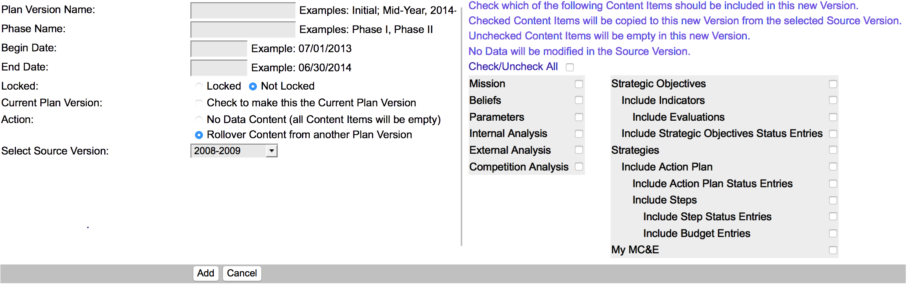

<div class='featurePanel scroll1 tqTest' id='annualRollover' title='Easy Annual Rollover'>


<div class='proposition'>
	3) Manage It Year After Year
	</div>
<div class='explanationContainer narrowWindowDeleteIdClass' style='' title='CLICK TO START/STOP SLIDE SHOW ANIMATION'>

	
	
	
	
	<!--img class='illustration shadow1' src='../images/d_newVersionSample.png' style='left: 40vw; top: 25vh; height:30vw;width:27vw;'-->

<div class='information' style='top:6vh;right:5vw;'>
Duplicate the Plan<br/>
Carry Forward Some or All Items<br/>
Generate Comparative Reports
</div>
<div class='information' style='top:53vh;right:5vw;'>
<div class='highlight'>Edit for a New Planning Cycle</div>
</div>

</div>
<div class='conclusion'>
Annual Planning is Progress not Makework
</div>

	<div class='featureLogo'><!logo!></div>
</div>